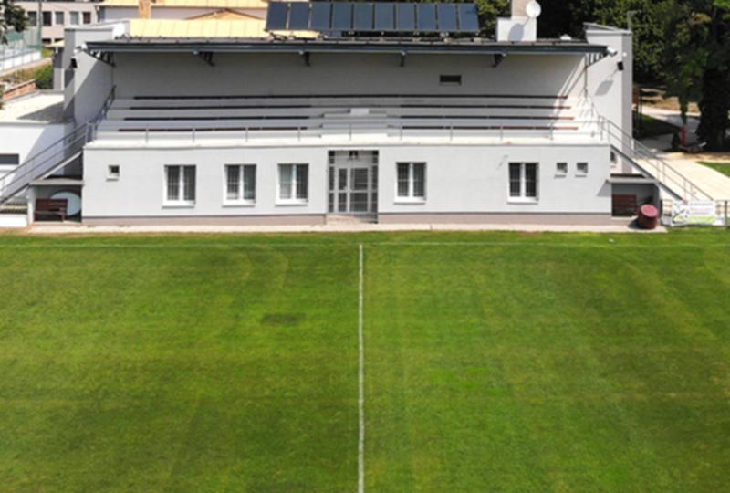
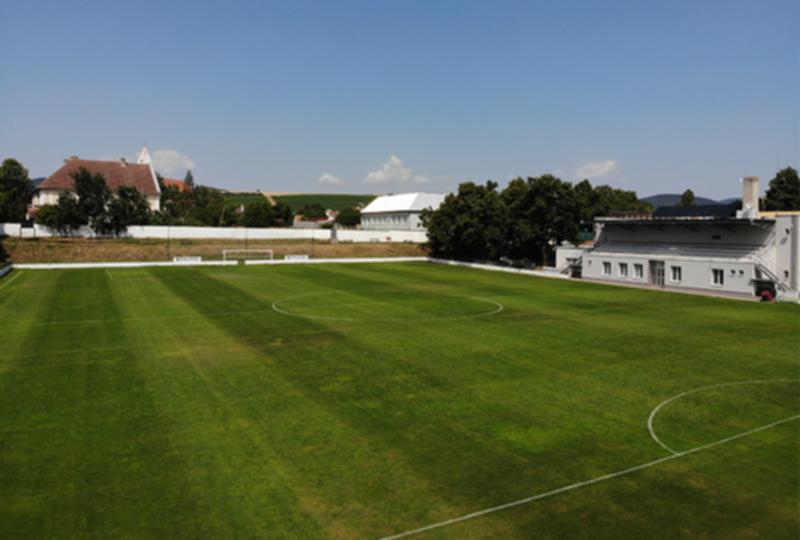

Klub
Štadión
Areál futbalového štadióna v Častkovciach tvoria dve zatrávnené ihriská.
Hlavná hracia trávnatá plocha, vedľajšia hracia trávnatá plocha a jedno multifunkčné ihrisko s umelým trávnikom a mantinelmi.
Rozmery
hlavná hracia plocha: 100 x 65 m
vedľajšia hracia plocha: 83 x 55 m
umelé ihrisko: 30 x 10 m
Kapacita štadióna je 1500 osôb
Miest na sedenie je 300
Sektor hostí je 0
V priestoroch futbalovej tribúny sa nachádzajú dve bytové jednotky, kancelárie futbalového klubu, V.I.P. priestory, šatne pre hostí, šatňa dospelých, šatňa dorastu a žiakov a šatňa pre rozhodcov. Každá šatňa má sociálne zariadenia.

Futbalový areál v Častkovciach prešiel v roku 2015 kompletnou rekonštrukciou. Nemalé finančné prostriedky sa investovali do skvalitnenia trávnatého podkladu na hlavnej a vedľajšej hracej ploche. Na hlavnej hracej ploche sa nainštalovali podzemné zavlažovacie systémy.
Hlavná budova, ktorej je súčasťou aj tribúna prešla taktiež kompletnou rekonštrukciou. Obec Častkovce spolu s firmou Royaldom kompletne zrekonštruovala a upravila vonkajšie i vnútorné priestory. Budova bola zateplená a oblečená do novej fasády. Šatne a vnútorné priestory boli sčasti prestavané, vymaľované, vydláždené. Sociálne zariadenie prešli kompletnou obmenou. Okná a dvere boli vymenené za plastové.
Nový a príjemný vzhľad sa bude určite páčiť každému návštevníkovi areálu.
Športový objekt slúži organizovaným a neorganizovaným aktivitám jednotlivcov a kolektívov všetkých vekových skupín, verejnosti, mládeži i športovcom na:
Pravidelný tréningový procesŠportové sústredenia a regeneráciuMajstrovské a nemajstrovské preteky, zápasy, turnajeRekreačné športovanie jednotlivcov i skupín, pre aktívny oddych.
Telovýchovná jednota
najvýznamnejšia organizácia, ktorá úzko spolupracovala s obcou nielen pri výstavbe, ale bola činná aj vo viacerých sférach spoločenského života. Vznikla v roku 1962.
Začiatky boli veľmi ťažké, ale od roku 1968 predseda TJ Jozef Bublavý dokázal organizáciu pozdvihnúť. Futbalisti mali prvé pomenovanie TJ Družstevník Častkovce – hlavným sponzorom bolo JRD v Častkovciach. Na futbalové zápasy sa zo začiatku cestovalo družstevnou P V3S (vetrieska). Hráči a priatelia futbalu tak na oplátku organizovali v nedeľu dopoludnia brigády, pri ktorých vypomáhali rôznymi prácami na JRD. Napríklad v žatve – zvoz snopov k mláťačke, odvoz obilia do sýpky, zvoz sena, nakládka cukrovej a kŕmnej repy.
Veľkým snom TJ bolo zaobstarať si vlastný autobus. Organizácia začala usporadúvať tanečné zábavy a zo zarobených peňazí zakúpila starší autobus (tancovačky boli v kultúrnom dome, kde sa kúrilo uhlím v kachliach a kúrenie zabezpečovali hlavne dorastenci). Autobus okrem výjazdov na futbalové zápasy sa využíval aj pri zájazdoch, ktoré organizovala TJ vo forme odmeny za prácu športovcom, ale aj priateľom futbalu – Zemplínska Šírava, Banská Bystrica, Dedinky, Demänovská jaskyňa, Dobšinská ľadová jaskyňa, Košice, Ostrava, Brno, Macocha, Jindřichův Hradec, Velehrad, Zlín.

Po určitom období sa dal autobus do prenájmu štátnym podnikom, začal zarábať, neskôr sa predal a kúpil nový. Telovýchovná jednota bola nápomocná obci aj pri poskytovaní finančných prostriedkov na projekty pri budovaní obce. Obec zapožičané finančné prostriedky TJ vždy vrátila.V roku 1989 sa zmenili pomery – začali kolísavé výsledky. Až nástupom Dušana Bublavého za predsedu TJ sa situácia upravila a futbalu sa začalo dariť. Podrobnejšia história častkovského futbalu je obsiahnutá v nasledujúcej podkapitole.
Futbal v Častkovciach
Prvé písomné zmienky o častkovskom futbale sa objavujú v obecnej kronike z roku 1945, kedy sa snaživosťou miestnej mládeže zriadilo ihrisko a organizovali sa futbalové zápasy. Za zmienku stojí rok 1946, kedy ŠK Častkovce usporiadal futbalový turnaj. Vo finále zdolal klub ŠK Častkovce susedný ŠK Čachtice.
V roku 1949 bolo v parku zriadené ihrisko, ktoré fungovalo do roku 1972.
Súťažne organizovaný futbal sa začal v r. 1962. Hrala sa najnižšia súťaž okresu Trenčín.
V rokoch 1968 - 1990 sa spustila výstavba športových objektov (v tejto dobe funkcionári TJ boli hybnou pákou i pri výstavbe obce).
V r. 1972 bolo vybudované hlavné ihrisko, ktoré slúži doteraz (v roku 1978 - vybudované odvodnenie a v roku 1981 – vybudované závlahy).
8. mája 1976 bol úspešne dobudovaný športový areál – tribúna a šatne. Pri tejto príležitosti sa hral priateľský futbalový zápas s bývalými futbalistami Slovana Bratislava (Gogh, Schrojf, Tibenský, Urban, Popluhár, Bubeník, Kiš...)
V r. 1978 -79 bolo dobudované tréningové ihrisko.
V r. 1989 sa uskutočnila posledná veľká budovateľská úprava, ktorá slúži dodnes – ohrada okolo hlavného ihriska. V tej dobe bola aktívna skupina športových nadšencov vedená Jozefom Bublavým: Michal Medveď, Milan Srnec, Jozef Hevier, Milan Benovič, Ján Madro, Benedikt Barančík, Ján Hevier, Bohuš Benovič, Milan Halienka, Jozef Čechvala, Milan Patko, Alojz Matyáš, Milan Cagala, Milan Bublavý (šuhajko), Rudolf Žinčík, Tibor Halienka, Ľudovít Hesko, Štefan Palcút, Rudolf Líska, Ján Cagala, Jozef Cibulka, Peter Žinčík, Ján Ondrejka, Michal Masár, Milan Burza, Jarko Barančík, Milan Záhradník, Jozef Barančík, Viliam Kirchner, Michal Madro, Jozef Pastorek, Alino Švajlenin, Rudolf Moravčík, Ján Srnec, Rudolf Bublavý – stavebný dozor, Ján Uhlík – predseda obce, Michal Krajčík – predseda JRD. Niektorí z nich už nie sú medzi živými, na niektorých sa možno pozabudlo, ale jedno je isté, ostalo po nich dielo, ktoré sa dodnes užíva a postupne zveľaďuje.
V rokoch 1993 - 1997 futbalový klub hral pod názvom TJ EMERS Častkovce.
K 40. výročiu organizovaného futbalu sa podarilo vyhrať oblastnú futbalovú súťaž 2001 - 2002 a postúpiť pod názvom TJ ROPSPOL Častkovce do V. ligy. Za týmto úspechom bola mravčia práca členov výboru FK: Dušana Bublavého, Jozefa Uhlíka, Milana Augustína, Vladimíra Bublavého, Petra Uhlíka, Petra Burzu, Ľuboša Líšku, Jána Burzu, Petra Halienku, pomoc generálneho sponzora p. Rudolfa Bublavého, sponzora PALMA-TUMYS, a.s., p. Ing. Františka Líšku a Obce Častkovce.
Nástup do ročníka 2003 - 2004 sa niesol v duchu celého hráčskeho i funkcionárskeho kolektívu súťaž vyhrať a postúpiť do IV. ligy, čo sa nakoniec aj naplnilo. Ročník to bol ťažký, keďže rovnaké ambície malo viac mužstiev.
Tento úspech vošiel do histórie častkovského futbalu. Zásluhy mal na tom v prvom rade hráčsky kolektív na čele s Jaroslavom Líškom – trénerom, jeho asistentom Jaroslavom Maderom, kapitánom mužstva Petrom Vráblom, Martinom Madrom a ďalšími.
Uznanie si zaslúžil aj celý výbor TJ ROPSPOL Častkovce, ktorý pracoval v tomto zložení: Dušan Bublavý – prezident, Ján Augustín – predseda klubu, Milan Augustín – pokladník, Jozef Uhlík – člen výboru, Vladimír Bublavý – doprava, Peter Burza – člen výboru, Ján Burza – člen výboru, Michal Burza – člen výboru, Peter Halienka – člen výboru, vedúci mužstva, Ľuboš Líška – tajomník, Ján Madro – člen výboru, Ladislav Macháč – člen výboru. Významnú úlohu tu zohrala pomoc sponzorov – generálneho sponzora p. Rudolfa Bublavého, p. Miroslava Mrekaja, Ing. Františka Líšku, Ing. Milana Cagalu, CSc. a Obce Častkovce.